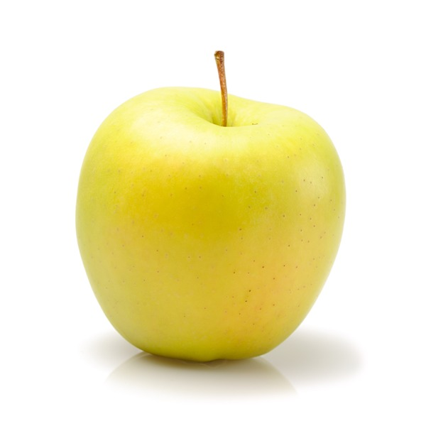
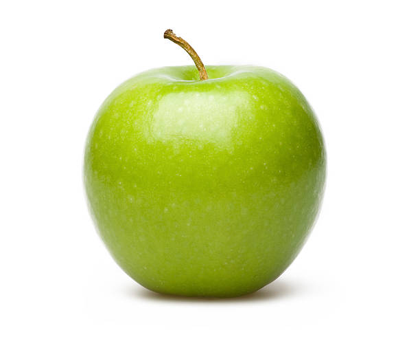
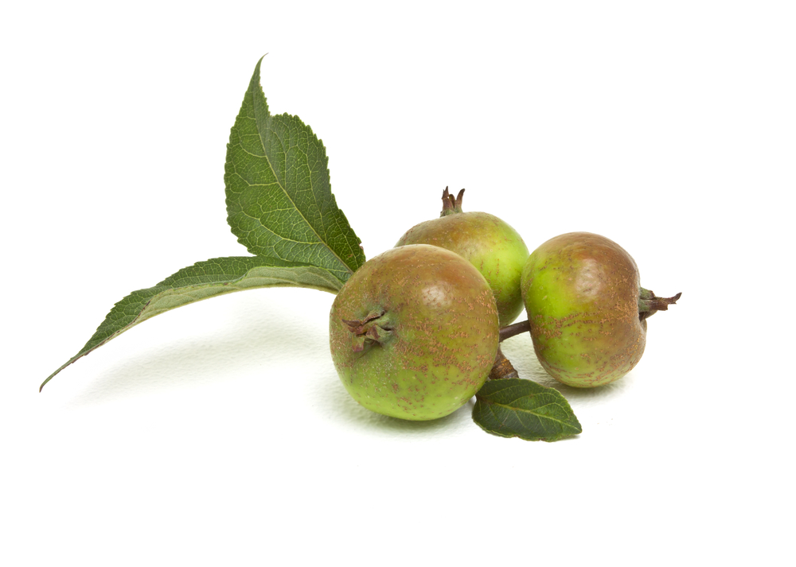
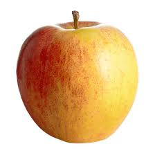
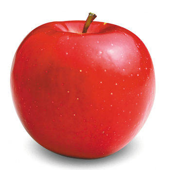
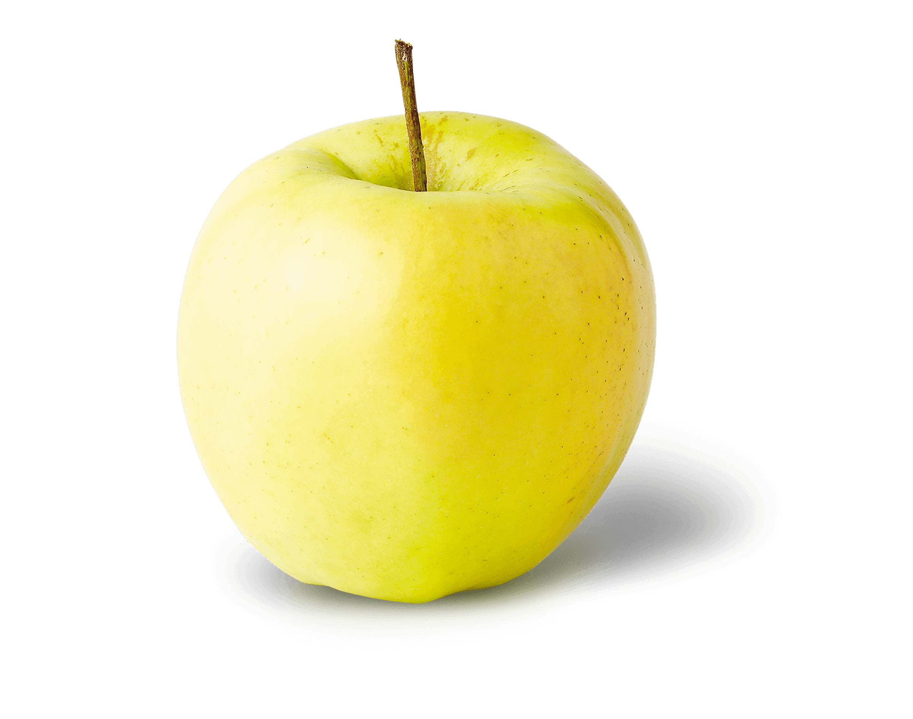
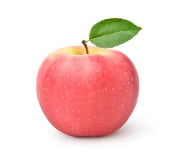

Some types of apples:
-
Red delicious

Red Delicious apples are medium-sized and have a conical shape. They are broadly round at the top and taper at the base. The thick skin turns bright red well before the fruits are fully ripe, which can lead to early harvests. As they mature, the skin becomes a darker red with white lenticels visibly dotting the surface. The fine-grained flesh is creamy white, crisp and juicy and offers a mildly sweet taste with flavors of melon.
-
Golden delicious

Golden Delicious apples are pale green to golden yellow in color and speckled with small lenticels (spots). They are small to medium in size, and tend to be conical or oblong in shape. Golden Delicious apples are firm, crisp, and white-fleshed. These apples have a balanced sweet-tart aromatic flavor, which has been described as honeyed. The flavor varies depending on where these apples are grown; in a cool climate, the amount of acid increases, actually creating a sweeter flavor. When grown in warmer areas, the acid content is lower, creating a milder flavor.
-
Granny Smith

Granny Smith apples are small to medium fruits, averaging 5 to 7 centimeters in diameter, and range in shape from round, oval, to conical. The skin is smooth, firm, chewy, and thick, remaining bright green when ripe and covered in tiny, white lenticels. In colder climates, the apples may also develop a yellow to pink blush. Underneath the surface, the white flesh is dense, crisp, and mildly aqueous with a fine, grainy consistency, encasing a central, fibrous core filled with small, brown-black seeds. Granny Smith apples have a balanced, sweet and acidic flavor with tangy, tart undertones.
-
Crabapple

Crabapples are very small, round, and squat in size, averaging 2-3 centimeters in diameter. The skin is green to light yellow with red blushing and some white speckling. The flesh is firm and cream-colored to yellow with a central fibrous core that runs the length of the fruit connecting to the long and slender stem. There are also a few brown seeds encased in the core. Crabapples are crunchy, musky, and acidic.
-
Gala apple

Generously brushed with a bright red blush on a yellow-gold background, its crisp ivory-colored flesh releases a spurt of mouthwatering juice that is deliciously sweet tart. This apple is merely a Gala apple picked at a small size.
-
Red Rome apple

Rome apples are medium to large in size and can be conical, round, to oblong in shape. The smooth, glossy, and thick skin has a yellow base and is almost completely covered in light red striping and deep red blush. There are also many white lenticels or pores covering the surface. The flesh is cream-colored to a pale white and is firm, crisp, and dense with many small dark-brown to black seeds encased in the central fibrous core. Rome apples are crunchy and offer a mild, sweet, and tangy flavor with a slightly floral aroma.
-
Ginger gold

Ginger Gold apples are generally small but can vary in size from small to medium, depending on their growing environment, and have a conical shape, tapering slightly towards the base. The apples have a characteristically long and slender brown stalk and sometimes showcase surface ribbing. The semi-thin skin ripens from green to pale yellow and has a small patch of rough brown russeting in the stem cavity. If the apples are left for extended periods on the tree, they will develop a waxy coating and the occasional light red blush. Underneath the surface, the white to cream-colored flesh has a fine-grained, aqueous, and crisp consistency. The flesh also oxidizes slowly, encasing a central core filled with tiny black-brown seeds. Ginger Gold apples are initially tart when harvested, developing a sweeter, milder flavor with spice-filled nuances with age.
-
Fuji apple

Fuji apples are moderately sized fruits, averaging 6 to 8 centimeters in diameter, and have a round to ovate shape with a slightly lopsided appearance. The semi-thick skin is smooth, waxy, and has a yellow-green base, covered in red-pink striping and blush. Fuji apples are known to display a wide range of skin color variation between fruits due to many sports being cultivated with varying shades. Underneath the surface, the flesh is dense, aqueous, crisp, fine-grained, and pale ivory to white, encasing a central core filled with small, black-brown seeds. Fuji apples are crunchy and low in acid, creating a mild and balanced, sweet-tart flavor with notes of honey and citrus.
Other apples
-
Apple iPod
- This apple is poisonous
-
Steve Jobs
- The tallest apple